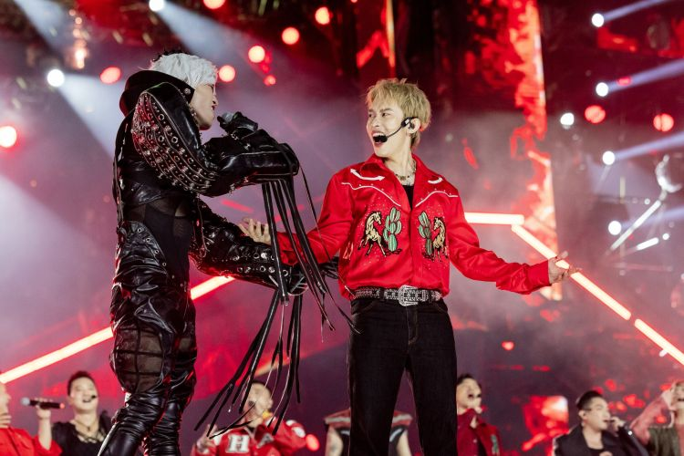

Looking Back at the Call Me By Fire Concert 19/10: Thank You for Rocking Out with 33 Talented Performers!
Posted : December 4, 2024The spectacular opening performance, along with modern sound and lighting at the Call Me By Fire Concert 2024, created an explosive atmosphere that captivated thousands of spectators.
On October 19, 2024, the Call Me By Fire Concert 2024 officially kicked off with a fiery and visually stunning performance, offering the audience an explosive musical and artistic experience. The event brought together thousands of fans, all captivated by the breathtaking performances. The concert opened with "Call Me By Fire," an impressive and grand opening act. The meticulously designed stage, combined with top-tier sound and lighting, kept the audience mesmerized. This performance marked a brilliant start to the event.
From the very first moment, the audience was drawn into the lively and passionate atmosphere of the performance. From the exceptional music and captivating choreography to the modern sound system and dazzling lights, everything came together to create grand and high-class performances. This event left a lasting impression not only with its energy but also with the meticulous attention to detail in every aspect, from stage design to special effects like fireworks and fire. These elements contributed to a heartfelt opening act, delivering a unique experience never seen before for the audience at the event.
With a total of 37 meticulously choreographed performances, each act offered the audience a visually stunning experience and a satisfying auditory journey. The artists captivated fans with familiar hit songs, reimagined through creative and unique performance styles. Every act was carefully crafted, from the lighting and sound to the stage setup, all contributing to a complete artistic space where emotion and music blended seamlessly, leaving an unforgettable impression on the audience.
The opening performance of the Call Me By Fire Concert 2024 created an explosive start, delivering intense and unforgettable emotional highs for the audience. With meticulous preparation, the concert promises not only to continue thrilling with impressive performances throughout the event but also to bring many surprises for the fans.
Relive the memories with an emotional recap video, and get ready for an even more explosive Call Me By Fire Concert on December 14th!